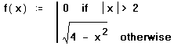
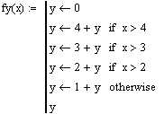

Do not type the word "if." It does not produce the operator.
x if y
Evaluates x if y is nonzero
(true). The enclosing program proceeds to the next line regardless of whether
x is evaluated or not. Conditional statements allow
Mathcad to execute or skip certain calculations. Use a conditional statement
whenever you want to direct program execution along a particular branch.
Do not type the word "otherwise."
It does not produce the operator.
x otherwise
Evaluates x if the if statement immediately preceding x is 0 (false). The otherwise
operator only works with the if operator. In the following example,

the function returns 0 if x
is greater than 2 or less than −2.
When x is between −2
and 2, the function returns the square root of 4
− x2.
Operands:
x is any valid Mathcad expression.
y is any valid Mathcad expression that can evaluate
to 0 in some cases. Only the return value of y
is considered; it can be a boolean expression
or any other Mathcad expression. For example, a local
assignment or a sequence of programming steps is allowed.
Notes:
Each conditional evaluation is considered on its own. When Mathcad encounters
several sequential if statements at the same level, it evaluates
each if statement in turn, regardless of the results of the previous statement.
If you wish to evaluate an expression based on whether a particular if
statement evaluates as true or false, use the otherwise operator.

If you use more than one if statement before an otherwise
statement, the otherwise statement is executed only when all previous conditions
are false. However, all previous if statements continue to be evaluated
regardless of the results of the previous if. In the example above fy(5)
= 9 and fy(2) = 1. There is no "else if"
or "case" statement in Mathcad that allows you to switch on multiple cases,
other than to use nested if ... otherwise pairs.